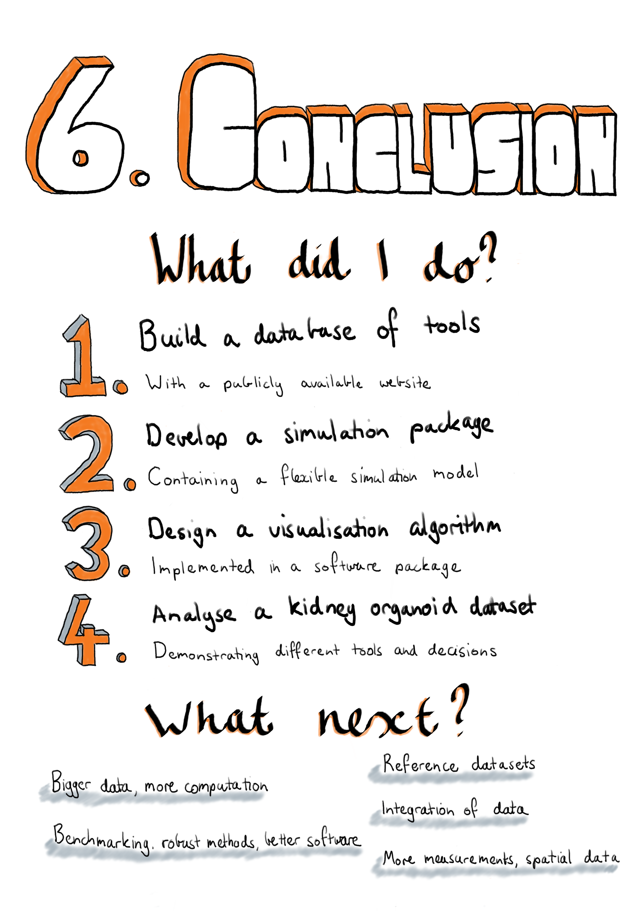

Chapter 6 Conclusion
“Once you’ve decided that something’s absolutely true, you’ve closed your mind on it, and a closed mind doesn’t go anywhere. Question everything. That’s what education’s all about.”
— David and Leigh Eddings
Belgarath the Sorcerer, 1995

My thesis explores the computational tools and techniques used to analyse single-cell RNA sequencing data. This type of data is the result of new technologies that have been developed over the last few years. It is now possible to capture individual cells, extract and isolate RNA from them and quantify the expression levels of genes in each cell. These new technologies allow us to inspect cells in a new way and open up a range of possibilities for biological studies, but usefulness of these technologies relies on our ability to interpret the data they produce. My PhD has coincided with a surge in the development of methods that attempt to make sense of this data and my thesis aims to chart this development and contribute to it. My contributions revolve around how we make decisions during an scRNA-seq analysis, which tools do we choose, how do we know that they work and what parameter values should we use?
My thesis contains four discrete but related projects that explore scRNA-seq analysis methods and decisions made during the analysis process.
In Chapter 2 - The scRNA-seq tools landscape I present my work developing and maintaining the scRNA-tools database, a database of software tools for analysing scRNA-seq data. I have recorded the details of over 450 tools including where they have been published, where the code is available, associated software licenses and the types of analysis they can perform. The scRNA-tools database allows researchers to identify focus areas of methods development, captures features of how tools are developed and shared, and displays trends in tool development over time. I have also designed a website interface to the database that makes this resource easily available to the research community. This website has been visited by hundreds of researchers from around the world. Over time new kinds of analysis have emerged and these could be integrated into the scRNA-tools database as categories to better organise the tools that are present. In the future the performance of the website could also be improved, particularly to better handle the large number of tools that it now displays.
Chapter 3 - Simulating scRNA-seq data describes Splatter, a software package for generating synthetic scRNA-seq datasets. Developers of new analysis tools should demonstrate their tools’ effectiveness and simulations are an important way of evaluating computational methods. Splatter provides a consistent, easy-to-use interface to several published simulations models, allowing researchers to select the most appropriate model for their situation. This interface includes functions for estimating parameters from real datasets, objects for storing those parameters and functions for using them to produce synthetic datasets with associated intermediate values, in a standard format. One of these models is the Splat simulation we introduced in the Splatter publication. This model is based on a negative binomial distribution and includes many of the features considered important in scRNA-seq, data including variation in total counts per cell, relationships between the mean and variance of each gene, and the ability to add additional dropout based on mean expression. The Splat model has been designed to be flexible and can be used to generate datasets with different properties, including different groups of cells, batch effects and continuous trajectories. Splatter also contains functions for assessing the similarity of simulations to real scRNA-seq datasets and we used these to compare the performance of several simulation models. The results showed good performance for the Splat model overall, however we did see that performance varied with different capture technologies and tissue types. When comparing the models currently available in Splatter I saw that those with sophisticated estimation procedures, including BASiCS and ZINB-WaVE, performed extremely well. The performance of these newer models suggests that the Splat estimation procedure could be improved and doing so would improve its usefulness for developers. The simulation model could also be extended in various ways, for example by including an underlying gene network or by making it possible to use the same set of intermediate values for multiple simulations.
One of the analysis steps that has received a large amount of attention from scRNA-seq methods developers is using unsupervised clustering to form groups of cells with similar transcriptional protocols. These approaches could be assessed using simulations and each method will have some parameters that affect how many clusters are produced. The number of clusters used in an analysis can affect how the results are interpreted but choosing these parameters is difficult. In Chapter 4 - Visualising clustering across resolutions I introduce clustering trees, an alternative, visualisation-based approach for selecting parameters that affect cluster number. For this approach a dataset is clustered multiple times at different resolutions and the overlap of samples between clusters at neighbouring resolutions is used to create a graph structure that is displayed as a tree. The structure of this tree can provide clues as to which resolution is most appropriate for an analysis, and more generally this visualisation can be used to display information across resolutions. How useful the clustering tree visualisation is depends somewhat on the clustering method used and it can become cluttered when there are many clusters present. Further work could look at improving these aspects of the algorithm and adapting it for fuzzy clustering methods. I also believe that the general idea of forming a graph of clusters may have other uses in a variety of applications. The clustering trees algorithm is implemented in a software package that is publicly available from the CRAN repository.
The final project of my PhD was to analyse a kidney organoid scRNA-seq dataset. This dataset was introduced in a publication investigating variability in the organoid differentiation protocol, where it was used to confirm that much of the variability is due to differences between batches rather than between organoids from the same batch. In a second publication, for which I performed the computational analysis, this dataset was profiled more thoroughly and the cell types present were identified. These included many of the cell types expected in the developing kidney as well as some off-target populations. To confirm these cell types we integrated the organoid data with a human foetal kidney dataset and found that many of the cell types were consistent. In Chapter 5 - Analysis of kidney organoid scRNA-seq data I re-analysed this dataset to demonstrate some alternative tools that we could have used in the analysis, focusing on how the decisions made at different stages affect the results. My main finding here was that using alternative droplet selection methods resulted in many more cells being included in the analysis. Continuing the analysis with these additional cells showed and that many of them were from a population which showed some evidence of an immune-like signature. While immune cells are not expected in kidney organoids, and their presence would need to be validated experimentally, there is a plausible pathway by which they could emerge and we did see hints of their presence in the published analysis. My re-analysis also showed robustness of the clustering methods used to how genes were selected and the presence of the additional cells. For both the published analysis and the analysis in this thesis chapter I have followed a reproducible analysis workflow, including producing websites to display the analysis code and results and making the version controlled code publicly available.
The rise of single-cell technologies has been staggering and over the course of my PhD the field has moved from exploratory studies with a few hundred cells to detailed investigations of complex tissues and processes with tens or hundreds of thousands of cells. Although scRNA-seq technologies have only been available for a short time, they continue to improve and over the next few years we will continue to see significant changes. New platforms and protocols will be developed and used to generate even larger and more detailed datasets. Experiments that combine scRNA-seq with other single-cell measurements such as chromatin accessibility will become more common, as will spatial transcriptomics technologies that can retain a cell’s position in a tissue while measuring its transcriptional profile.
The continued improvement in single-cell technologies will require further development of computational methods for analysing the data they produce, building on the significant work that has already been done. As bigger datasets become more common, tools will need to be carefully engineered to handle the computational workload. Bigger studies will also require methods to integrate multiple samples and different types of data. This has already become a significant area of research but it is a difficult problem and I expect it will take some time for the robustness and effectiveness of these methods to be established.
As I have discussed throughout my thesis, deciding which methods to use for various tasks is a crucial part of scRNA-seq analysis. Currently these decisions are largely made based on the analyst’s experience and intuition, what is common practice and how easy tools are to install and use. Benchmarking and comparison studies are vital for helping to understand which tools are effective, but they can be difficult and time consuming to perform. For some analysis tasks, such as differential expression testing, there are established evaluation metrics that can be used, but for others, such as ordering of cells or integration of datasets, it is less clear how to measure performance. Developing new metrics is vital for informative comparisons. As more benchmarking studies are performed, I hope the field crystallises around an established set of methods for common tasks and energy can be redirected towards alternative approaches, performing complex and novel analyses and improving the quality, usability and efficiency of existing tools.
Even when scRNA-seq analysis methods are reliable and effective, interpreting their results can be difficult and requires the input of a domain expert. Often there is a somewhat circular process where established knowledge is used to evaluate results from what is supposed to be an unsupervised process. To some degree this is the result of the novelty of the field and a reluctance to trust unfamiliar methods, but it is also true that we are looking at biology at a new resolution and this is challenging our current understanding. Large scale profiling projects such as the Human Cell Atlas will make interpretation easier by providing a reference to test against. When it is easier to assign identities to cells, it will become more practical to perform designed experiments such as studies that investigate the effect of a drug in a target cell type in a particular tissue. This has already begun to happen as exploratory analyses have been completed on many tissues. However, building these reference atlases is an extremely difficult task that will take many years and a well-coordinated global effort. Developing methods that best make use of these references will also require significant research but that is an effort that is already underway.
Single-cell RNA sequencing is an exciting technology that has opened up a world of possibilities, but we are still at the early stages of working out how best to use it. My contribution to this effort is in building a database that tracks the analysis tools that are available, and developing simulation software that can be used to evaluate methods. As well as deciding which tool to use, analysts need to choose parameters for those they select and I have developed a visualisation that can help choose parameters that change clustering resolution. I have also contributed to the biological literature by performing the computational analysis in a study that profiled the cell types present in kidney organoids and exploring how the decisions made during this analysis could affect the results and how they are interpreted. Overall I believe I have made a significant contribution to the emerging field of single-cell RNA sequencing data analysis during my PhD.